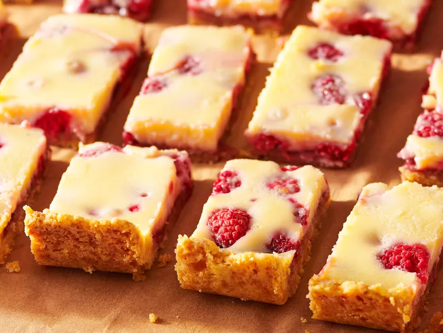

Lemon-Raspberry Cheesecake Bars

Description
These are the most delicious and creamy lemon cheesecake bars. They have a buttery shortbread crust with a cheesecake and lemon layer and are dusted with powdered sugar. They are the perfect dessert!
Ingredients
- 1 cooking spray (such as Pam®)
Crust
- 2 cups all-purpose flour
- ¼ cup brown sugar
- ½ teaspoon salt
- 1 cup cold unsalted butter, cut into 1-inch chunks
Filling
- ¾ cup seedless raspberry preserves
- 1 (8 ounce) package cream cheese, at room temperature
- ½ cup white sugar
- 1 tablespoon all-purpose flour
- 1 large egg
- 1 large egg yolk
- 2 tablespoons lemon zest
- 2 tablespoons fresh lemon juice
- ½ teaspoon vanilla extract
- 1 (6 ounce) container fresh raspberries, cut in half lengthwise
Steps :
- Gather ingredients and preheat the oven to 350 degrees F (175 degrees C).
- Line a 9x13-inch baking pan with aluminum foil, allowing some to extend over the edges. Spray foil with cooking spray to keep the filling from sticking to the sides. You'll use the overhang to lift the bars from the pan to cut them.
- Process flour, brown sugar, and salt in the bowl of a food processor until blended. Add cold butter chunks and process until mixture resembles coarse cornmeal.
- Pour crust mixture into the prepared pan, shake it a bit to help even out the mixture, and press down gently with fingertips. Use a smaller pan, such as 8x8-inch, to press down the entire surface so the crust is smooth and tight.
- Bake in the preheated oven until golden brown, about 20 minutes. Let cool for 5 minutes.
- While the crust cools, heat jam in a microwave-safe bowl in a microwave just until warm, 30 to 60 seconds; stir until smooth.
- Beat cream cheese with an electric stand mixer for 1 minute; add sugar and flour and beat until well blended. With mixture running, add egg, egg yolk, lemon zest, lemon juice, and vanilla extract. Mix well until smooth.
- Spread jam evenly over the cooled crust. Place raspberries, cut-side down, evenly over jam.
- Pour cream cheese mixture over berries and gently smooth mixture until it covers the entire pan.
- Bake in the preheated oven just until set, 25 to 30 minutes. Cool for 1 hour at room temperature, then place in the refrigerator to cool for another 2 hours.
- Gently lift cooled cheesecake from the baking pan using the foil overhang. Place on a cutting board, peel back edges of foil, and cut into 24 bars.